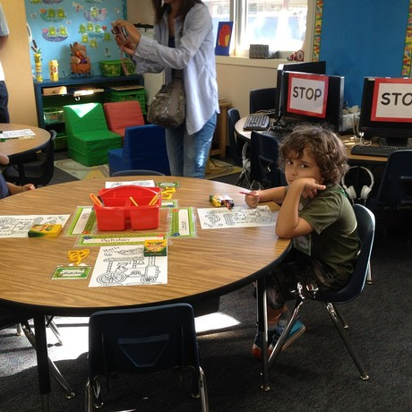
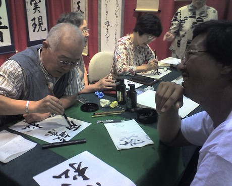
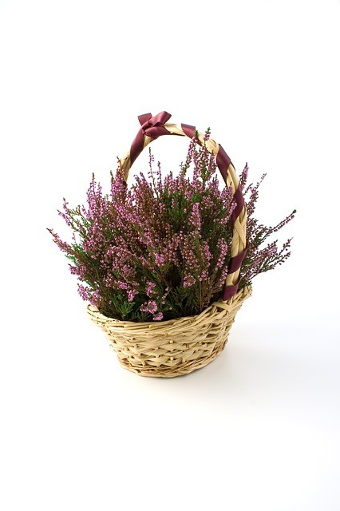

Guía de estudio para el JLPT N5: Gramática de los adjetivos
Esta seccion de la guia esta dedicada a la gramatica de los adjetivos que aparecen en el JLPT N5. Lo redacte de tal forma que cada titulo tiene una "formula" de como usar el adjetivo, un ejemplo y una imagen que ilustra cada frase. Espero les guste!
Si ésta es tu primera vez leyendo la guía, te invito a conocer las demás secciones que he escrito haciendo click en la etiqueta JLPT-N5.
1. Adjetivo i + です
この本は面白いです。
このほんはおもしろいです。
Este libro es interesante
2. Adjetivo i + くない + です
この本は面白くないです。
このほんはおもしろくないです。
Este libro no es interesante
3. Adjetivo i + くなかった + です

この本は面白くなかったです。
このほんはおもしろくなかったです。
Este libro no era interesante
4. Adjetivo i + くて
この本は厚くて面白いです。
このほんはあつくておもしろいです。
Este libro es grueso e interesante
5. Adjetivo i + く + verbo
友達と楽しく遊びました。
ともだちとたのしくあそびました。
Jugué con alegría con mi amigo.
6. Adjetivo i + Sustantivo

これは面白い本です。
これはおもしろいほんです。
Este es un libro interesante
7. Adjetivo i + の
赤いのはいくらですか？
あかいのはいくらですか？
¿Cuánto cuesta el rojo?
8. Sustantivo + Adjetivo na + です
このスカートはきれいです。
このスカートはきれいです。
Esta falda es hermosa.
9. Sustantivo + Adjetivo na +ではありません
このスカートはきれいではありません。
Esta falda no es hermosa.
10. Sustantivo + Adjetivo na +でした
このレストランはきれいでした。
Este era un bonito restaurante.
11. Sustantivo + Adjetivo na +ではありませんでした
このレストランはきれいではありませんでした。
Este no era un bonito restaurante.
12. Sustantivo + Adjetivo na +ではない
このレストランはきれいではないです。
Este no es un bonito restaurante.
13. Sustantivo + Adjetivo na +ではなかった
Imagen por Catherine
このレストランはきれいではなかったです。
Este no era un bonito restaurante
14. Sustantivo + Adjetivo na + で
あの人は元気で優しいです。
あのひとはげんきでやさしいです。
Esa persona es alegre y amable.
15. Sustantivo + Adjetivo na + に + verbo

Foto por Ozawa
あの人は漢字を上手に書けます。
あのひとはかんじをじょうずにかけます。
Esa persona es buena escribiendo kanji
16. Sustantivo + Adjetivo na + な + verbo
あの人は元気な人です。
あのひとはげんきなひとです。
Esta persona es una persona animada.
17. Sustantivo + Adjetivo na + の

きれいなのを買いました。
きれいなのをかいました。
Compre la mas hermosa
En la próxima semana seguiré escribiendo sobre más gramática relacionada al examen. Sus sugerencias y comentarios son bienvenidos :)
Via NI
Artículos Relacionados

Guía de estudio para el JLPT N4: Kanji

Guía de estudio para el JLPT N5: Adjetivos i parte 2